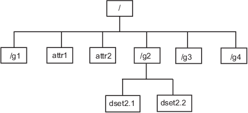

Import HDF5 Files
You can read data from an HDF5 file in several ways. Programmatically, you can use the MATLAB® high-level HDF5 functions or the HDF5 library namespaces of low-level functions. Interactively, you can use the Import Data Live Editor task or (in MATLAB Online™) the Import Tool app.
Hierarchical Data Format, Version 5 (HDF5) is a
general-purpose, machine-independent standard for storing scientific data in files, developed by
the National Center for Supercomputing Applications (NCSA). HDF5 is used by a wide range of
engineering and scientific fields that want a standard way to store data so that it can be
shared. For more information about the HDF5 file format, read the HDF5 documentation available
at The HDF Group website (https://www.hdfgroup.org).
Note
For information about importing HDF4 files, which have a separate, incompatible format, see Import HDF4 Files Using High-Level Functions.
Import Data Using High-Level HDF5 Functions
MATLAB includes several functions that you can use to examine the contents of an HDF5 file and import data from the file into the MATLAB workspace.
h5disp— View the contents of an HDF5 file.h5info— Create a structure that contains all the metadata defining an HDF5 file.h5read— Read data from a dataset in an HDF5 file.h5readatt— Read data from an attribute associated with a dataset in an HDF5 file or with the file itself (a global attribute).
For details about how to use these functions, see their reference pages, which include examples. The following sections illustrate some common usage scenarios.
Determine Contents of HDF5 File
HDF5 files can contain data and metadata, called attributes. HDF5 files organize the data and metadata in a hierarchical structure similar to the hierarchical structure of a UNIX® file system.
In an HDF5 file, the directories in the hierarchy are called groups. A group can contain other groups, datasets, attributes, links, and data types. A dataset is a collection of data, such as a multidimensional numeric array or string. An attribute is any data that is associated with another entity, such as a dataset. A link is similar to a UNIX file system symbolic link. Links are a way to reference objects without having to make a copy of the object.
Data types are a description of the data in the dataset or attribute. Data types tell how to interpret the data in the dataset.
To get a quick view into the contents of an HDF5 file, use the h5disp function.
h5disp("example.h5")
HDF5 example.h5
Group '/'
Attributes:
'attr1': 97 98 99 100 101 102 103 104 105 0
'attr2': 2x2 H5T_INTEGER
Group '/g1'
Group '/g1/g1.1'
Dataset 'dset1.1.1'
Size: 10x10
MaxSize: 10x10
Datatype: H5T_STD_I32BE (int32)
ChunkSize: []
Filters: none
Attributes:
'attr1': 49 115 116 32 97 116 116 114 105 ...
'attr2': 50 110 100 32 97 116 116 114 105 ...
Dataset 'dset1.1.2'
Size: 20
MaxSize: 20
Datatype: H5T_STD_I32BE (int32)
ChunkSize: []
Filters: none
Group '/g1/g1.2'
Group '/g1/g1.2/g1.2.1'
Link: 'slink'
Type: 'soft link'
Target: 'somevalue'
Group '/g2'
Dataset 'dset2.1'
Size: 10
MaxSize: 10
Datatype: H5T_IEEE_F32BE (single)
ChunkSize: []
Filters: none
Dataset 'dset2.2'
Size: 5x3
MaxSize: 5x3
Datatype: H5T_IEEE_F32BE (single)
ChunkSize: []
Filters: none
.
.
.
To explore the hierarchical organization of an HDF5 file, use the h5info function. The h5info function returns a
structure that contains various information about the HDF5 file, including the
name of the file.
info = h5info("example.h5")
info =
struct with fields:
Filename: 'matlabroot\matlab\toolbox\matlab\demos\example.h5'
Name: '/'
Groups: [4×1 struct]
Datasets: []
Datatypes: []
Links: []
Attributes: [2×1 struct]
By looking at the Groups and Attributes
fields, you can see that the file contains four groups and two attributes. The
Datasets, Datatypes, and
Links fields are all empty, indicating that the root
group does not contain any datasets, data types, or links. To explore the
contents of the sample HDF5 file further, examine one of the structures in
Groups. This example shows the contents of the second
structure in this field.
level2 = info.Groups(2)
level2 =
struct with fields:
Name: '/g2'
Groups: []
Datasets: [2×1 struct]
Datatypes: []
Links: []
Attributes: []
In the sample file, the group named /g2 contains two
datasets. This figure illustrates this part of the sample HDF5 file
organization.

To get information about a dataset, such as its name, dimensions, and data
type, look at either of the structures returned in the
Datasets field.
dataset1 = level2.Datasets(1)
dataset1 =
struct with fields:
Name: 'dset2.1'
Datatype: [1×1 struct]
Dataspace: [1×1 struct]
ChunkSize: []
FillValue: []
Filters: []
Attributes: []
Import Data from HDF5 File
To read data or metadata from an HDF5 file, use the h5read function. As arguments,
specify the name of the HDF5 file and the name of the dataset. (To read the
value of an attribute, you must use h5readatt.)
To illustrate, this example reads the dataset /g2/dset2.1
from the HDF5 sample file example.h5.
data = h5read("example.h5","/g2/dset2.1")
data =
10×1 single column vector
1.0000
1.1000
1.2000
1.3000
1.4000
1.5000
1.6000
1.7000
1.8000
1.9000
Map HDF5 Data Types to MATLAB Data Types
When the h5read function reads data from
an HDF5 file into the MATLAB workspace, it maps HDF5 data types to MATLAB data types, as shown in this table.
| HDF5 Data Type | h5read Output |
|---|---|
Bitfield | Array of packed 8-bit integers |
Float | MATLAB
|
Integer types, signed and unsigned | Equivalent MATLAB integer types, signed and unsigned |
Opaque | Cell array of |
Reference | Cell array of the actual data pointed to by the reference, not the value of the reference |
Strings, fixed-length and variable-length | String arrays |
Enums | Cell array of character vectors, where each enumerated value is replaced by the corresponding member name |
Compound | 1-by-1 structure array; the dimensions of the dataset are expressed in the fields of the structure |
Arrays | Array of values using the same data type as the HDF5
array. For example, if the array is of signed 32-bit
integers, the MATLAB array will be of type
|
The example HDF5 file included with MATLAB includes examples of all these data types.
For example, the dataset /g3/string is a string.
h5disp("example.h5","/g3/string")
HDF5 example.h5
Dataset 'string'
Size: 2
MaxSize: 2
Datatype: H5T_STRING
String Length: 3
Padding: H5T_STR_NULLTERM
Character Set: H5T_CSET_ASCII
Character Type: H5T_C_S1
ChunkSize: []
Filters: none
FillValue: ' '
Now read the data from the file. MATLAB returns it as a string array.
s = h5read("example.h5","/g3/string")
s =
2×1 string array
"ab "
"de "
The compound data types are always returned as structures. The dimensions of
the dataset are expressed in the fields of the structure. For example, the
dataset /g3/compound2D is a compound data type.
h5disp("example.h5","/g3/compound2D")
HDF5 example.h5
Dataset 'compound2D'
Size: 2x3
MaxSize: 2x3
Datatype: H5T_COMPOUND
Member 'a': H5T_STD_I8LE (int8)
Member 'b': H5T_IEEE_F64LE (double)
ChunkSize: []
Filters: none
FillValue: H5T_COMPOUND
Now read the data from the file. MATLAB returns it as a structure.
data = h5read("example.h5","/g3/compound2D")
data =
struct with fields:
a: [2×3 int8]
b: [2×3 double]
Import Data Using Low-Level HDF5 Functions
MATLAB provides direct access to dozens of functions in the HDF5 library with low-level functions that correspond to the functions in the HDF5 library. In this way, you can access the features of the HDF5 library from MATLAB, such as using the HDF5 subsetting capabilities and writing complex data types. For more information, see Export Data Using MATLAB Low-Level HDF5 Functions.
Interactively Read Data from HDF5 File
This example shows how to use the Import Data task to explore the structure of an HDF5 file, import data from the file, and then analyze and visualize the data.
Explore and Import Data
The HDF5 file included with this example contains a swath of precipitation probability estimates from the NASA Precipitation Processing System (PPS).
Open the Import Data task in the Live Editor by selecting Task > Import Data on the Live Editor tab. Enter the name of the HDF5 file, nasa_pps.h5, in the File field. Use the task to explore the structure of the data, including the groups, datasets, and attributes. The file contains a group S1, which contains three datasets. The probabilityOfPrecip dataset contains estimates of the probability of precipitation at given locations; the Latitude and Longitude datasets contain the locations of these probability estimates. The attributes of the probabilityOfPrecip dataset include units, which has value 'percent'.
Select and import the data and attributes from the three datasets.

To see the code that this task generates, expand the task display by clicking Show code at the bottom of the task parameter area.
% Create a structure to store imported HDF5 data nasa_pps = struct(); filename = "nasa_pps.h5"; nasa_pps.Groups(1).Name = "S1"; nasa_pps.Groups(1).Datasets(1).Name = "Latitude"; nasa_pps.Groups(1).Datasets(1).Value = h5read(filename, "/S1/Latitude"); nasa_pps.Groups(1).Datasets(2).Name = "Longitude"; nasa_pps.Groups(1).Datasets(2).Value = h5read(filename, "/S1/Longitude"); nasa_pps.Groups(1).Datasets(3).Name = "probabilityOfPrecip"; nasa_pps.Groups(1).Datasets(3).Value = h5read(filename, "/S1/probabilityOfPrecip"); nasa_pps.Groups(1).Datasets(1).Attributes(1).Name = "units"; nasa_pps.Groups(1).Datasets(1).Attributes(1).Value = h5readatt(filename, "/S1/Latitude", "units"); nasa_pps.Groups(1).Datasets(1).Attributes(2).Name = "DimensionNames"; nasa_pps.Groups(1).Datasets(1).Attributes(2).Value = h5readatt(filename, "/S1/Latitude", "DimensionNames"); nasa_pps.Groups(1).Datasets(1).Attributes(3).Name = "Units"; nasa_pps.Groups(1).Datasets(1).Attributes(3).Value = h5readatt(filename, "/S1/Latitude", "Units"); nasa_pps.Groups(1).Datasets(1).Attributes(4).Name = "_FillValue"; nasa_pps.Groups(1).Datasets(1).Attributes(4).Value = h5readatt(filename, "/S1/Latitude", "_FillValue"); nasa_pps.Groups(1).Datasets(1).Attributes(5).Name = "CodeMissingValue"; nasa_pps.Groups(1).Datasets(1).Attributes(5).Value = h5readatt(filename, "/S1/Latitude", "CodeMissingValue"); nasa_pps.Groups(1).Datasets(2).Attributes(1).Name = "units"; nasa_pps.Groups(1).Datasets(2).Attributes(1).Value = h5readatt(filename, "/S1/Longitude", "units"); nasa_pps.Groups(1).Datasets(2).Attributes(2).Name = "DimensionNames"; nasa_pps.Groups(1).Datasets(2).Attributes(2).Value = h5readatt(filename, "/S1/Longitude", "DimensionNames"); nasa_pps.Groups(1).Datasets(2).Attributes(3).Name = "Units"; nasa_pps.Groups(1).Datasets(2).Attributes(3).Value = h5readatt(filename, "/S1/Longitude", "Units"); nasa_pps.Groups(1).Datasets(2).Attributes(4).Name = "_FillValue"; nasa_pps.Groups(1).Datasets(2).Attributes(4).Value = h5readatt(filename, "/S1/Longitude", "_FillValue"); nasa_pps.Groups(1).Datasets(2).Attributes(5).Name = "CodeMissingValue"; nasa_pps.Groups(1).Datasets(2).Attributes(5).Value = h5readatt(filename, "/S1/Longitude", "CodeMissingValue"); nasa_pps.Groups(1).Datasets(3).Attributes(1).Name = "units"; nasa_pps.Groups(1).Datasets(3).Attributes(1).Value = h5readatt(filename, "/S1/probabilityOfPrecip", "units"); nasa_pps.Groups(1).Datasets(3).Attributes(2).Name = "_FillValue"; nasa_pps.Groups(1).Datasets(3).Attributes(2).Value = h5readatt(filename, "/S1/probabilityOfPrecip", "_FillValue"); nasa_pps.Groups(1).Datasets(3).Attributes(3).Name = "DimensionNames"; nasa_pps.Groups(1).Datasets(3).Attributes(3).Value = h5readatt(filename, "/S1/probabilityOfPrecip", "DimensionNames"); nasa_pps.Groups(1).Datasets(3).Attributes(4).Name = "CodeMissingValue"; nasa_pps.Groups(1).Datasets(3).Attributes(4).Value = h5readatt(filename, "/S1/probabilityOfPrecip", "CodeMissingValue"); nasa_pps.Groups(1).Datasets(3).Attributes(5).Name = "Units"; nasa_pps.Groups(1).Datasets(3).Attributes(5).Value = h5readatt(filename, "/S1/probabilityOfPrecip", "Units"); clear filename
Organize and Prepare Data
Extract data from the three datasets as column vectors using the colon operator (:).
lats = nasa_pps.Groups.Datasets(1).Value(:); lons = nasa_pps.Groups.Datasets(2).Value(:); probs = nasa_pps.Groups.Datasets(3).Value(:);
Clean up the data in preparation for plotting. Valid indices in these three datasets conform to these conditions:
The value in
probsis in the interval [0, 100].The value in
latsis in the interval [–90, 90].The value in
lonsis in the interval [–180, 180].
Keep only the values at the valid indices in the three datasets by using logical indexing. This step removes invalid latitude and longitude values as well as invalid percent values for the probability estimates.
isValid = 0<=probs & probs<=100 & abs(lats)<=90 & abs(lons)<=180; probs = probs(isValid); lats = lats(isValid); lons = lons(isValid);
Plot Data
Create a geographic density plot for the valid data in the datasets. The "warmer" colors represent greater probabilities of precipitation.
g = geodensityplot(lats,lons,probs,FaceColor="interp"); geobasemap grayland geolimits([-80 80],[-180 -90]) title("Probability of Precipitation vs. Location") colormap turbo

Credits
Global precipitation data provided by NASA Precipitation Processing System, from their website at https://gpm.nasa.gov/data/directory.
Read HDF5 Dataset Using Dynamically Loaded Filters
MATLAB supports reading and writing HDF5 datasets using dynamically loaded filters. The HDF Group maintains a list of registered filters at Filters on their website.
To read a dataset that has been written using a user-defined, third-party filter, follow these steps:
Install the HDF5 filter plugin on your system as a shared library or DLL.
Set the
HDF5_PLUGIN_PATHenvironment variable to point to the local installation of the plugin, and then start MATLAB:On Windows® — Set the environment variable using System Properties > Advanced > Environment Variables, and then start MATLAB.
On Linux® and Mac — Set the environment variable from the terminal, and then start MATLAB from the same terminal.
After you complete these steps, you can use the high-level or low-level MATLAB HDF5 functions to read and access datasets that have been compressed using the third-party filter. For more information, see HDF5 Dynamically Loaded Filters on The HDF Group website.
Linux Users Only: Rebuild Filter Plugins Using MATLAB HDF5 Shared Library
Starting in R2021b, in certain cases, Linux users using a filter plugin with callbacks to core HDF5 library
functions must rebuild the plugin using the shipping MATLAB HDF5 shared library,
/matlab/bin/glnxa64/libhdf5.so.x.x.x. If you do not
rebuild the plugin using this version of the shared library, you might
experience issues ranging from undefined behavior to crashes. For more
information, see Build HDF5 Filter Plugins on Linux Using MATLAB HDF5 Shared Library or GNU Export Map.